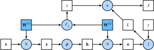

Propagation avant, rétropropagation et graphes de calcul
:label:sec_backprop
Jusqu’à présent, nous avons entraîné nos modèles avec la descente de gradient stochastique par mini-lots. Cependant, lorsque nous avons implémenté l’algorithme, nous ne nous sommes souciés que des calculs impliqués dans la propagation avant (forward propagation) à travers le modèle. Au moment de calculer les gradients, nous avons simplement invoqué la fonction de rétropropagation fournie par le framework de deep learning.
Le calcul automatique des gradients simplifie profondément l’implémentation des algorithmes de deep learning. Avant la différenciation automatique, même de petits changements dans des modèles compliqués nécessitaient de recalculer à la main des dérivées complexes. Étonnamment souvent, les articles académiques devaient allouer de nombreuses pages à la dérivation des règles de mise à jour. Bien que nous devions continuer à nous appuyer sur la différenciation automatique pour pouvoir nous concentrer sur les parties intéressantes, vous devriez savoir comment ces gradients sont calculés sous le capot si vous voulez aller au-delà d’une compréhension superficielle du deep learning.
Dans cette section, nous plongeons au cœur des détails de la propagation arrière (backward propagation), plus communément appelée rétropropagation (backpropagation). Pour donner un aperçu à la fois des techniques et de leurs implémentations, nous nous appuyons sur des mathématiques de base et des graphes de calcul. Pour commencer, nous concentrons notre exposé sur un MLP à une seule couche cachée avec un déclin des poids (régularisation \(\ell_2\), qui sera décrite dans les chapitres suivants).
Propagation avant
La propagation avant (forward propagation ou forward pass) désigne le calcul et le stockage des variables intermédiaires (y compris les sorties) d’un réseau de neurones, dans l’ordre de la couche d’entrée vers la couche de sortie. Nous allons maintenant détailler étape par étape le fonctionnement d’un réseau de neurones avec une seule couche cachée. Cela peut sembler fastidieux mais, selon les mots éternels du virtuose du funk James Brown, il faut “en payer le prix pour être le patron” (pay the cost to be the boss).
Par souci de simplicité, supposons que l’exemple d’entrée est \(\mathbf{x}\in \mathbb{R}^d\) et que notre couche cachée n’inclut pas de terme de biais. Ici, la variable intermédiaire est :
\[\mathbf{z}= \mathbf{W}^{(1)} \mathbf{x},\]
où \(\mathbf{W}^{(1)} \in \mathbb{R}^{h \times d}\) est le paramètre de poids de la couche cachée. Après avoir passé la variable intermédiaire \(\mathbf{z}\in \mathbb{R}^h\) à travers la fonction d’activation \(\phi\), nous obtenons notre vecteur d’activation cachée de longueur \(h\) :
\[\mathbf{h}= \phi (\mathbf{z}).\]
La sortie de la couche cachée \(\mathbf{h}\) est également une variable intermédiaire. En supposant que les paramètres de la couche de sortie ne possèdent qu’un poids de \(\mathbf{W}^{(2)} \in \mathbb{R}^{q \times h}\), nous pouvons obtenir une variable de couche de sortie avec un vecteur de longueur \(q\) :
\[\mathbf{o}= \mathbf{W}^{(2)} \mathbf{h}.\]
En supposant que la fonction de perte est \(l\) et l’étiquette de l’exemple est \(y\), nous pouvons alors calculer le terme de perte pour un seul exemple de données,
\[L = l(\mathbf{o}, y).\]
Comme nous le verrons dans la définition de la régularisation \(\ell_2\) qui sera introduite plus tard, étant donné l’hyperparamètre \(\lambda\), le terme de régularisation est
\[s = \frac{\lambda}{2}
\left(\|\mathbf{W}^{(1)}\|_\textrm{F}^2 +
\|\mathbf{W}^{(2)}\|_\textrm{F}^2\right),\]
:eqlabel:eq_forward-s
où la norme de Frobenius de la matrice est simplement la norme \(\ell_2\) appliquée après avoir aplati la matrice en un vecteur. Enfin, la perte régularisée du modèle sur un exemple de données donné est :
\[J = L + s.\]
Nous appellerons \(J\) la fonction objectif dans la discussion suivante.
Graphe de calcul de la propagation avant
Tracer des graphes de calcul nous aide à visualiser les
dépendances des opérateurs et des variables au sein du calcul. La
:numref:fig_forward contient le graphe associé au réseau
simple décrit ci-dessus, où les carrés représentent des variables et les
cercles des opérateurs. Le coin inférieur gauche signifie l’entrée et le
coin supérieur droit est la sortie. Notez que les directions des flèches
(qui illustrent le flux de données) sont principalement vers la droite
et vers le haut.

:label:fig_forward
Rétropropagation
La rétropropagation désigne la méthode de calcul du gradient des paramètres du réseau de neurones. En résumé, la méthode traverse le réseau dans l’ordre inverse, de la couche de sortie vers la couche d’entrée, selon la règle de dérivation des fonctions composées (chain rule) du calcul différentiel. L’algorithme stocke toutes les variables intermédiaires (dérivées partielles) requises lors du calcul du gradient par rapport à certains paramètres. Supposons que nous ayons des fonctions \(\mathsf{Y}=f(\mathsf{X})\) et \(\mathsf{Z}=g(\mathsf{Y})\), dans lesquelles l’entrée et la sortie \(\mathsf{X}, \mathsf{Y}, \mathsf{Z}\) sont des tenseurs de formes arbitraires. En utilisant la règle de dérivation des fonctions composées, nous pouvons calculer la dérivée de \(\mathsf{Z}\) par rapport à \(\mathsf{X}\) via
\[\frac{\partial \mathsf{Z}}{\partial \mathsf{X}} = \textrm{prod}\left(\frac{\partial \mathsf{Z}}{\partial \mathsf{Y}}, \frac{\partial \mathsf{Y}}{\partial \mathsf{X}}\right).\]
Ici, nous utilisons l’opérateur \(\textrm{prod}\) pour multiplier ses arguments après que les opérations nécessaires, telles que la transposition et l’échange des positions d’entrée, ont été effectuées. Pour les vecteurs, c’est simple : il s’agit simplement d’une multiplication matrice-matrice. Pour les tenseurs de dimension supérieure, nous utilisons la contrepartie appropriée. L’opérateur \(\textrm{prod}\) cache toute la lourdeur notationnelle.
Rappelons que les paramètres du réseau simple à une couche cachée,
dont le graphe de calcul est présenté dans la
:numref:fig_forward, sont \(\mathbf{W}^{(1)}\) et \(\mathbf{W}^{(2)}\). L’objectif de la
rétropropagation est de calculer les gradients \(\partial J/\partial \mathbf{W}^{(1)}\) et
\(\partial J/\partial
\mathbf{W}^{(2)}\). Pour ce faire, nous appliquons la règle de
dérivation des fonctions composées et calculons, tour à tour, le
gradient de chaque variable intermédiaire et paramètre. L’ordre des
calculs est inversé par rapport à celui effectué lors de la propagation
avant, puisque nous devons commencer par le résultat du graphe de calcul
et remonter vers les paramètres. La première étape consiste à calculer
les gradients de la fonction objectif \(J=L+s\) par rapport au terme de perte \(L\) et au terme de régularisation \(s\) :
\[\frac{\partial J}{\partial L} = 1 \; \textrm{et} \; \frac{\partial J}{\partial s} = 1.\]
Ensuite, nous calculons le gradient de la fonction objectif par rapport à la variable de la couche de sortie \(\mathbf{o}\) selon la règle de dérivation des fonctions composées :
\[ \frac{\partial J}{\partial \mathbf{o}} = \textrm{prod}\left(\frac{\partial J}{\partial L}, \frac{\partial L}{\partial \mathbf{o}}\right) = \frac{\partial L}{\partial \mathbf{o}} \in \mathbb{R}^q. \]
Ensuite, nous calculons les gradients du terme de régularisation par rapport aux deux paramètres :
\[\frac{\partial s}{\partial \mathbf{W}^{(1)}} = \lambda \mathbf{W}^{(1)} \; \textrm{et} \; \frac{\partial s}{\partial \mathbf{W}^{(2)}} = \lambda \mathbf{W}^{(2)}.\]
Nous sommes maintenant en mesure de calculer le gradient \(\partial J/\partial \mathbf{W}^{(2)} \in \mathbb{R}^{q \times h}\) des paramètres du modèle les plus proches de la couche de sortie. L’utilisation de la règle de dérivation des fonctions composées donne :
\[\frac{\partial J}{\partial
\mathbf{W}^{(2)}}= \textrm{prod}\left(\frac{\partial J}{\partial
\mathbf{o}}, \frac{\partial \mathbf{o}}{\partial
\mathbf{W}^{(2)}}\right) + \textrm{prod}\left(\frac{\partial J}{\partial
s}, \frac{\partial s}{\partial \mathbf{W}^{(2)}}\right)= \frac{\partial
J}{\partial \mathbf{o}} \mathbf{h}^\top + \lambda
\mathbf{W}^{(2)}.\] :eqlabel:eq_backprop-J-h
Pour obtenir le gradient par rapport à \(\mathbf{W}^{(1)}\), nous devons poursuivre la rétropropagation le long de la couche de sortie vers la couche cachée. Le gradient par rapport à la sortie de la couche cachée \(\partial J/\partial \mathbf{h} \in \mathbb{R}^h\) est donné par
\[ \frac{\partial J}{\partial \mathbf{h}} = \textrm{prod}\left(\frac{\partial J}{\partial \mathbf{o}}, \frac{\partial \mathbf{o}}{\partial \mathbf{h}}\right) = {\mathbf{W}^{(2)}}^\top \frac{\partial J}{\partial \mathbf{o}}. \]
Puisque la fonction d’activation \(\phi\) s’applique par élément, le calcul du gradient \(\partial J/\partial \mathbf{z} \in \mathbb{R}^h\) de la variable intermédiaire \(\mathbf{z}\) nécessite l’utilisation de l’opérateur de multiplication par élément, que nous notons par \(\odot\) :
\[ \frac{\partial J}{\partial \mathbf{z}} = \textrm{prod}\left(\frac{\partial J}{\partial \mathbf{h}}, \frac{\partial \mathbf{h}}{\partial \mathbf{z}}\right) = \frac{\partial J}{\partial \mathbf{h}} \odot \phi'\left(\mathbf{z}\right). \]
Enfin, nous pouvons obtenir le gradient \(\partial J/\partial \mathbf{W}^{(1)} \in \mathbb{R}^{h \times d}\) des paramètres du modèle les plus proches de la couche d’entrée. Selon la règle de dérivation des fonctions composées, nous obtenons
\[ \frac{\partial J}{\partial \mathbf{W}^{(1)}} = \textrm{prod}\left(\frac{\partial J}{\partial \mathbf{z}}, \frac{\partial \mathbf{z}}{\partial \mathbf{W}^{(1)}}\right) + \textrm{prod}\left(\frac{\partial J}{\partial s}, \frac{\partial s}{\partial \mathbf{W}^{(1)}}\right) = \frac{\partial J}{\partial \mathbf{z}} \mathbf{x}^\top + \lambda \mathbf{W}^{(1)}. \]
Entraînement des réseaux de neurones
Lors de l’entraînement des réseaux de neurones, la propagation avant et la rétropropagation dépendent l’une de l’autre. En particulier, pour la propagation avant, nous traversons le graphe de calcul dans le sens des dépendances et calculons toutes les variables sur son chemin. Celles-ci sont ensuite utilisées pour la rétropropagation où l’ordre de calcul sur le graphe est inversé.
Prenons le réseau simple susmentionné comme exemple illustratif.
D’une part, le calcul du terme de régularisation
:eqref:eq_forward-s pendant la propagation avant dépend des
valeurs actuelles des paramètres du modèle \(\mathbf{W}^{(1)}\) et \(\mathbf{W}^{(2)}\). Ils sont donnés par
l’algorithme d’optimisation selon la rétropropagation lors de
l’itération la plus récente. D’autre part, le calcul du gradient pour le
paramètre :eqref:eq_backprop-J-h pendant la
rétropropagation dépend de la valeur actuelle de la sortie de la couche
cachée \(\mathbf{h}\), qui est donnée
par la propagation avant.
Par conséquent, lors de l’entraînement des réseaux de neurones, une fois les paramètres du modèle initialisés, nous alternons la propagation avant avec la rétropropagation, en mettant à jour les paramètres du modèle à l’aide des gradients donnés par la rétropropagation. Notez que la rétropropagation réutilise les valeurs intermédiaires stockées lors de la propagation avant pour éviter des calculs redondants. L’une des conséquences est que nous devons conserver les valeurs intermédiaires jusqu’à ce que la rétropropagation soit terminée. C’est aussi l’une des raisons pour lesquelles l’entraînement nécessite beaucoup plus de mémoire qu’une simple prédiction. De plus, la taille de ces valeurs intermédiaires est approximativement proportionnelle au nombre de couches du réseau et à la taille du lot (batch size). Ainsi, l’entraînement de réseaux plus profonds utilisant des tailles de lots plus importantes conduit plus facilement à des erreurs de mémoire insuffisante (out-of-memory).
Résumé
La propagation avant calcule et stocke séquentiellement les variables intermédiaires au sein du graphe de calcul défini par le réseau de neurones. Elle procède de la couche d’entrée vers la couche de sortie. La rétropropagation calcule et stocke séquentiellement les gradients des variables intermédiaires et des paramètres au sein du réseau de neurones dans l’ordre inverse. Lors de l’entraînement de modèles de deep learning, la propagation avant et la rétropropagation sont interdépendantes, et l’entraînement nécessite beaucoup plus de mémoire que la prédiction.
Exercices
- Supposons que les entrées \(\mathbf{X}\) d’une fonction scalaire \(f\) sont des matrices \(n \times m\). Quelle est la dimension du gradient de \(f\) par rapport à \(\mathbf{X}\) ?
- Ajoutez un biais à la couche cachée du modèle décrit dans cette
section (vous n’avez pas besoin d’inclure le biais dans le terme de
régularisation).
- Dessinez le graphe de calcul correspondant.
- Dérivez les équations de propagation avant et arrière.
- Calculez l’empreinte mémoire pour l’entraînement et la prédiction dans le modèle décrit dans cette section.
- Supposons que vous vouliez calculer les dérivées secondes. Qu’arrive-t-il au graphe de calcul ? Combien de temps prévoyez-vous que le calcul prendra ?
- Supposons que le graphe de calcul soit trop volumineux pour votre
GPU.
- Pouvez-vous le partitionner sur plus d’un GPU ?
- Quels sont les avantages et les inconvénients par rapport à l’entraînement sur un mini-lot plus petit ?